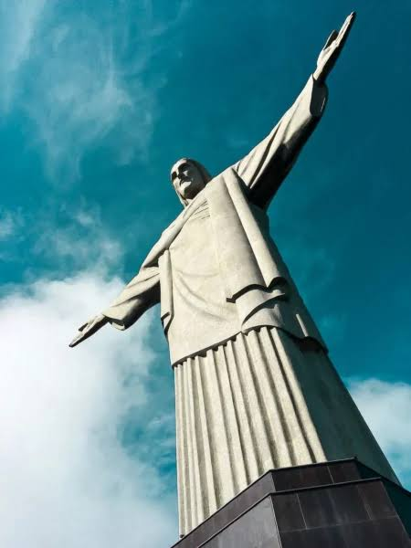
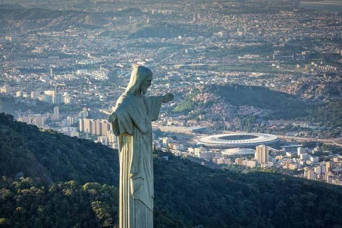
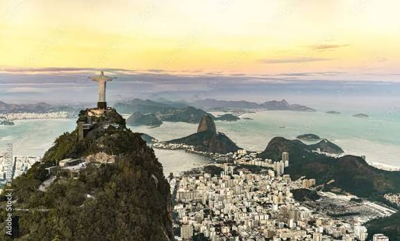

Ideado a finales del siglo XIX, el proyecto cobró fuerza real en 1921 de la mano de la Iglesia Católica para conmemorar el centenario de la Independencia de Brasil. Diseñado por el ingeniero brasileño Heitor da Silva Costa y esculpido por el artista francés Paul Landowski, su construcción tardó cerca de nueve años. Inaugurado el 12 de octubre de 1931, el Cristo se convirtió rápidamente en un icono global de fe y bienvenida, despojándose de su exclusivo sentido religioso para transformarse en el emblema indiscutible de Río de Janeiro y de todo el país.

Situado en la cima del cerro del Corcovado a 710 metros sobre el nivel del mar, el Cristo Redentor es la escultura Art Decó más grande del mundo. Mide 30 metros de altura (más un pedestal de 8 metros) y sus brazos extendidos abarcan una distancia de 28 metros. Estructuralmente, la estatua está hecha de hormigón armado, pero toda su superficie exterior está revestida por miles de pequeñas baldosas triangulares de esteatita (piedra jabón). Este material fue elegido por su alta resistencia a las duras condiciones climáticas y al paso del tiempo.

Elegido en 2007 como una de las Nuevas Siete Maravillas del Mundo Moderno, el monumento recibe millones de visitantes cada año. Debido a su ubicación expuesta en la cima del cerro, la estatua sufre impactos frecuentes de descargas eléctricas durante las tormentas, lo que exige continuas labores de restauración en su recubrimiento de piedra y en su red de pararrayos. En los últimos años se han llevado a cabo importantes modernizaciones de accesibilidad, incluyendo la instalación de escaleras mecánicas y ascensores panorámicos para facilitar el ascenso de los turistas.
